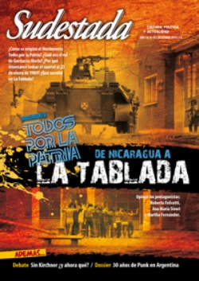

Buscar
Treinta años de punk en Argentina
Como viento que cruza el océano en pequeñas oleadas, el punk sopló al oído de unos pocos atentos, de manera confusa y turbia, poniendo nombre a esa sensibilidad que ruge desde las tripas y el corazón. Pero si la cuna del fenómeno es anglosajona, ¿cuál fue el combustible de odio y distorsión para estos hijos de la clase media disconforme, si la dictadura parecía haber barrido con las ganas de levantar la mirada?
Edición N° 95
Diciembre 2010
Revista bimensual
Comprar edición impresaSumario
- MTP: De Nicaragua a La Tablada
- El sonido de un disparo
- Martillo Roldán, un campeón sin corona
- Treinta años de punk en Argentina
- "Mis libros son como experimentos"
- "Cuando te sacás de encima los prejuicios, crecés"
- Un país, una muerte y muchas preguntas
- Un guapo de Ensenada en el Olimpo
Compartir Articulo
"Desde la primera canción, la cosa pintó como peligrosa... pero el caldo se puso espeso cuando palabrotas de grueso calibre volaron hacia el lado de los rockeros, acompañadas de escupidas y gritos. '¡Levántense muertos de mierda!', vociferaba el bajista. Algunos 'camperas' empezaron a saltar y armar despiole, al son del tema 'Represión' que balbuceaba algo así como que hay represión en todas partes (...) Ya todo el mundo de pie y formando barricadas, ante los aullidos del cantante que seguía tirando miasmas (esta vez en contra de la Argentina) (...) Lo único que el rock les pide es que vayan a gritar a Inglaterra si les dan bola". La crónica de la periodista Gloria Guerrero en su columna de la revista Humor es lapidaria: "Punk go home". Aunque ella no lo sabe, con la gresca de Los Violadores en el Auditorio de la Universidad de Belgrano el 17 de julio de 1981, emerge el punk made in Argentina en la escena rockera. Ni confesiones de invierno ni mañanas campestres, es sonido de ciudad, "ruido de autos, mugre y miseria. Es el medio ambiente el que genera la música", declara pronto PilTrafa, el cantante del escándalo a la revista Perfil en el año de la guerra de Malvinas.
"Cuando sos chico, sos anarquista, no queda otra, si no sos un tarado"(Chary, cantante de Loquero)
Es 1977 y en la revista Pelo, un artículo sin firma habla de estos "Rebeldes sin causa". Pedro Braun viaja ese mismo año a Londres, ve a los punk en las calles y regresa convencido de que no está solo, hay "otros solos". Ya no es Pedro Braun sino Harry B, y arma Los Testículos (que pronto serán Los Violadores). Debutan al año siguiente, cuando los periódicos locales anuncian: "Sid Vicious, drogadicto y asesino murió en su ley". La furia de Sex Pistols, la flema punk que detonó el disparo de partida, se incinera de combustión espontánea en Londres. Mientras, en una Buenos Aires celada por Falcons verdes, algunos adolescentes que se sienten incómodos con el diseño social que ofrece la dictadura labran su propia rebelión, que no tiene ningún punto de contacto con la de la generación que las Fuerzas Armadas están exterminando en ese mismo instante.
Entre el 80 y el 83 un puñado de bandas ensaya y toca como puede en un circuito de bares para un público que a veces no pasa de un manojo de asistentes. Son el germen que contagia punk en la ciudad de Buenos Aires. Pero como en las comisarías del Río de la Plata no conocen la cura para el nuevo virus de esos menores de edad de cabezas afeitadas y pelos parados, les aplican el tratamiento que mejor saben: los muelen a palos.
Hasta el 81 el punk es un rumor esquivo y eventual. El escándalo de la Universidad de Belgrano los arroja al conocimiento público. Ese día la policía detiene y golpea a todos los músicos. Pero el daño está hecho y al año siguiente Los Violadores graba un disco. Como ninguna compañía quiere editarlo, su productor, Mundi Epifanio, crea un pequeño sello, Umbral, por el que finalmente en 1983 se presenta el debut de Los Violadores y el de una banda heavy que tiene buena relación con los punks, aunque el público heavy y punk termine siempre a los cachetazos: V8.
Sin embargo, el primer disco de Los Violadores, lejos de abrir las puertas de la difusión a las bandas de la escena, la acerca al circuito del rock y la convierte en la opción punk de la batea. Alerta Roja registra "Derrumbando la casa rosada", pero jamás lo podrá publicar. Para los punks las cosas siguen casi igual que durante la dictadura, son el blanco preferido de las redadas policiales. Sus conciertos, esporádicos y complicados. De todos modos, ya no se trata de un puñado de niños ensayando música, sino del brote de un movimiento contracultural contestatario que amenaza desbordar los escenarios y expandir sus fronteras.
(La nota completa en la edición gráfica de Sudestada Nº 95 - Diciembre 2010)
Comentarios
Walter Marini
Leonardo Rodríguez
Articulos más vistos


LIBRERÍA SUDESTADA

Colección infantil

Distribuidora de Libros

Suscripción

Sudestada en URUGUAY

Otros articulos de esta edición
 Nota de Tapa
Nota de Tapa
MTP: De Nicaragua a La Tablada
23 de enero de 1989. Cortes de luz, hiperinflación, sublevaciones carapintadas y un gobierno a la deriva. Esa calurosa mañana, ...
"Mis libros son como experimentos"
Diseñador, ilustrador, escritor. Más allá de los rótulos, Pablo Bernasconi es un artista que busca que los lectores se involucren, ...
 Malditos
Malditos
Martillo Roldán, un campeón sin corona
En el tambo de su padre forjó la fuerza en sus manos. De chico soñaba con tocar el acordeón, hasta ...
El sonido de un disparo
Cuando la vio venir, Mariano fue consciente, repentinamente, del tamaño de la bestia que tenía enfrente. Su asesinato puso en ...
 Entrevista con Andrea Prodan
Entrevista con Andrea Prodan
"Cuando te sacás de encima los prejuicios, crecés"
Lejos de sacar provecho del apellido ilustre que dejó su hermano en el rock nacional, Andrea Prodan se debate entre ...
 Debate
Debate
Un país, una muerte y muchas preguntas
La muerte sorpresiva de Néstor Kirchner abrió la puerta a la discusión entre infinitas variantes. El balance de la gestión ...